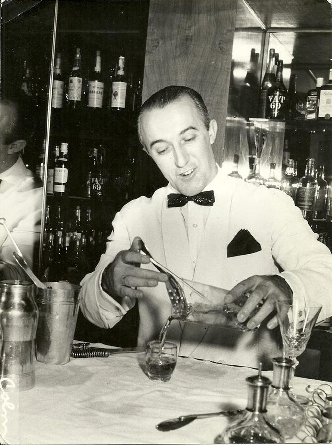
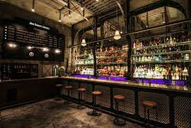
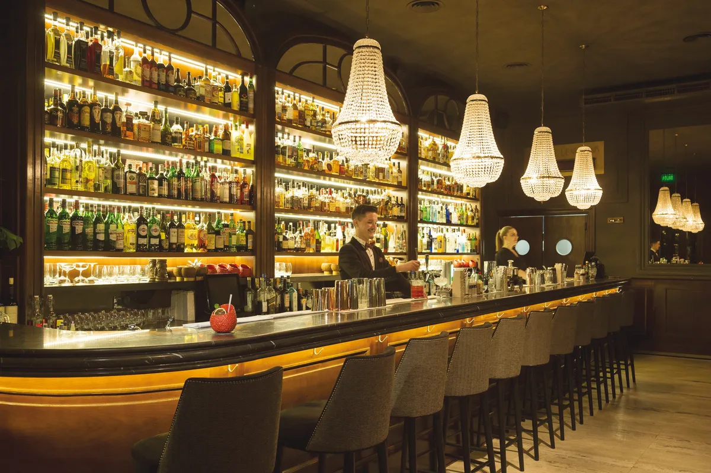

Historia del Barman
Como una profesión antigua, los bartenders, en un inicio, dirigían bares públicos y posadas. No solo preparaban tragos, de hecho, elaboraban el licor que servían. En Europa occidental, los barmans eran terratenientes, lo que demostraba su alta posición en la sociedad.
Posteriormente, esta tradición se trasladó a América. Antes de la prohibición, la mixología era una expresión artística compleja. No obstante, su prohibición fortaleció aún más el estatus de los camareros. El hecho de que tenían que lidiar con sustancias ilegales hizo que su posición se vuelva más oscura, misteriosa e impresionante.
Además, infringir la ley implicó grandes ganancias. Hoy en día, el arte de la mixología es menos frecuente y la profesión ya no es tan mística como fue en un inicio, pero aún prospera.
Bares de Buenos Aires
Uptown
Es uno de los bares más top y cool de la noche porteña y hay una razón. Toda su decoración remite a la ciudad de Nueva York: desde la calle se puede ver una «estación de metro» plagada de carteles, pegatinas y grafitis. En el interior del lugar hay un cartel con la leyenda «Uptown & The Bronx» y a partir de allí, la noche comienza.
Solo con reservas.Su carta de tragos incluye clásicos, como el “gin tonic” y el “Manhattan” (recomedado, y tragos de autor. El “Uptown Negroni” , que combina Jameson, Carpano Rosso, Jägermeister Spice cubriendo un gran cubo de hielo de café cold brew.
Tres Monos

El bar Tres Monos, en Palermo, está en el puesto 85 del ranking The World's 50 Best Bars. En sólo un año, se ubicó entre los 100 mejores del mundo. En plena cuarentena, sortearon la crisis con cócteles embotellados, delivery a toda hora y sumaron servicio de cafetería y brunch.
Para 2021 planean expandir la marca. Cómo le ganaron a la cuarentena. Lejos de los bares temáticos y de exclusivas contraseñas para entrar, Tres Monos fue una de las aperturas más resonantes de 2019 por volver a lo simple de la mejor manera: buena coctelería y buen servicio en un lugar chiquito y relajado del barrio de Palermo, donde la barra y el cliente son los protagonistas, donde cualquier noche es normal verlo a Atienza (uno de los bartenders que eligió Messi para su fiesta de casamiento) preparar un Grosera (cóctel estrella de la carta), servir un vaso de cerveza tirada o preguntarle al consumidor qué tiene ganas de tomar esa noche.
Presidente Bar
El bar Presidente, así bautizado en honor del primer mandatario Manuel Quintana, sobre la tradicional y elegante avenida de Recoleta, está en un petit hotel convertido en club de varios ambientes, un sitio para cocktail & food lovers. Una experiencia más gastronómica que no hace mucho tiempo se aprecia en la ciudad de profesionales de espíritu joven, que saben enlazar sabores y sensaciones, con tantos alcoholes existentes, y comer en la barra. Es el caso de Sebastian García, head bartender y director creativo, que se luce cada noche tras la larga y sólida barra bajo lámparas de época.